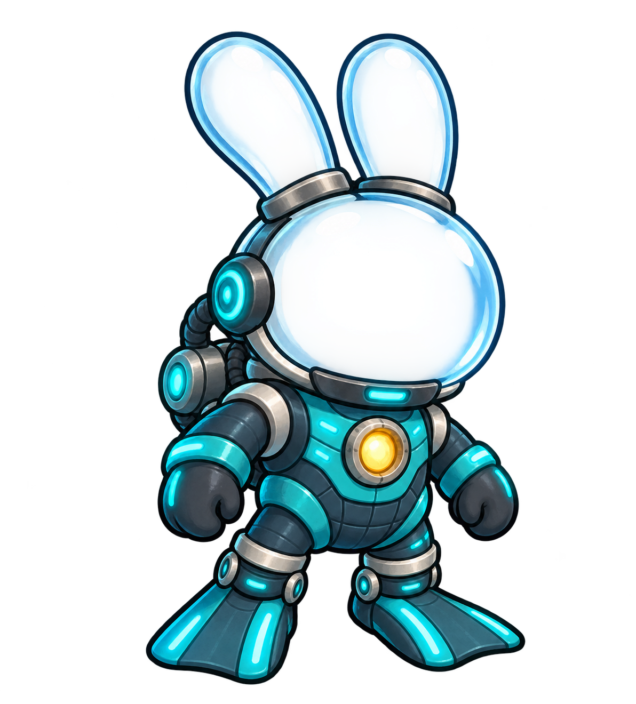
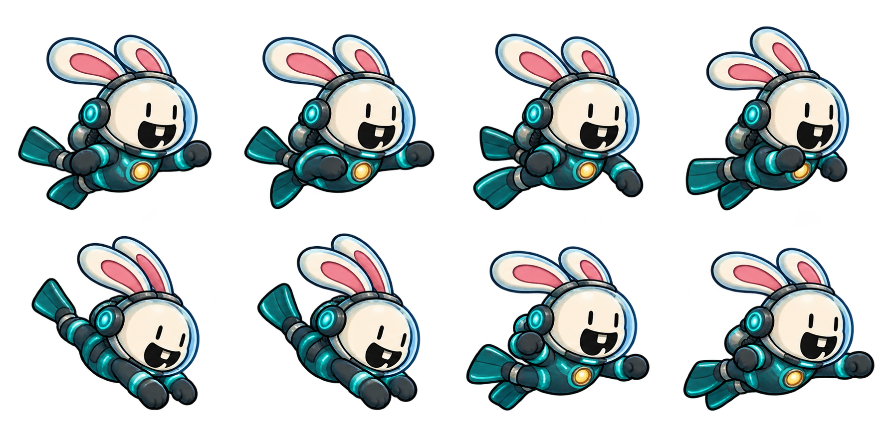

Bunny’s new Aqua suit
Painted to match Bunny: soft rounded teal armor, a glowing golden chest core, cyan lights, and a clear helmet with room for the pink ears. Watch the paddling paws and flipper kicks, then switch to diving or an underwater punch.

The matching suit pickupLoading painted swimming poses…
See all eight painted poses

Artwork and generation prompts